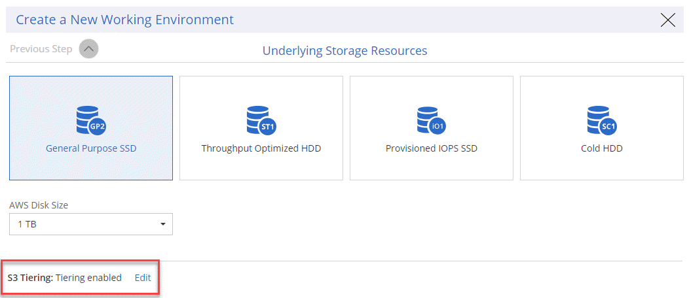

Cloud Manager 3.6 の新機能
OnCommand Cloud Manager では通常、新しい機能、拡張機能、およびバグ修正を提供するために、毎月新しいリリースが導入されます。

|
以前のリリースをお探しですか？"3.5 の新機能" |
AWS C2S 環境をサポート（ 2019 年 5 月 2 日）
Cloud Volumes ONTAP 9.5 と Cloud Manager 3.6.4 は、現在米国およびその他の国で使用できますAWS Commercial クラウドサービス（ C2S ）環境を介した Intelligence Community （ IC ）。HA ペアとシングルノードシステムは、 C2S に導入できます。
Cloud Manager 3.6.6 （ 2019 年 5 月 1 日）
AWS で 6TB のディスクをサポート
Cloud Volumes ONTAP for AWS で EBS ディスクサイズとして 6TB を選択できるようになりました。最新の "汎用 SSD のパフォーマンスが向上します"つまり、パフォーマンスを最大化するための最適な選択肢は 6TB のディスクです。
この変更は、 Cloud Volumes ONTAP 9.5 、 9.4 、および 9.3 でサポートされています。
Azure のシングルノードシステムで新しいディスクサイズをサポートします
Azure のシングルノードシステムで 8TB 、 16TB 、および 32TB のディスクを使用できるようになりました。ディスクサイズの増加により、 Premium ライセンスまたは BYOL ライセンスを使用した場合、ディスクのみで最大 368 TB のシステム容量に到達できます。
この変更は、 Cloud Volumes ONTAP 9.5 、 9.4 、および 9.3 でサポートされています。
Azure では、シングルノードシステムの Standard SSD がサポートされます
標準の SSD Managed Disks は、 Azure のシングルノードシステムでサポートされるようになりました。Premium SSD と Standard HDD の間では、どちらも一定のパフォーマンスが得られます。
この変更は、 Cloud Volumes ONTAP 9.5 、 9.4 、および 9.3 でサポートされています。
NetApp Kubernetes Service で作成された Kubernetes クラスタの自動検出
Cloud Manager で、 NetApp Kubernetes Service を使用して導入した Kubernetes クラスタを自動的に検出できるようになりました。これにより、 Kubernetes クラスタを Cloud Volumes ONTAP システムに接続して、コンテナ用の永続的ストレージとして使用できるようになります。
次の図は、自動で検出された Kubernetes クラスタを示しています。「 NKS に移動」リンクをクリックすると、 NetApp Kubernetes Service に直接移動します。

NTP サーバを設定する機能
ネットワークタイムプロトコル（ NTP ）サーバを使用するように Cloud Volumes ONTAP を設定できるようになりました。NTP サーバを指定すると、ネットワーク内のシステム間で時刻が同期されるため、時刻の違いによる問題の回避に役立ちます。
Cloud Manager API を使用するか、 CIFS サーバのセットアップ時にユーザインターフェイスから NTP サーバを指定します。
-
。 "Cloud Manager API" NTP サーバの任意のアドレスを指定できます。AWS のシングルノードシステム用の API を次に示します。

-
CIFS サーバを設定する際、 Cloud Manager ユーザインターフェイスを使用して、 Active Directory ドメインを使用する NTP サーバを指定できます。別のアドレスを使用する必要がある場合は、 API を使用してください。
次の図は、 CIFS のセットアップ時に選択できる NTP Server フィールドを示しています。

Cloud Manager 3.6.5 （ 2019 年 4 月 2 日）
Cloud Manager 3.6.5 では、次の機能が拡張されています。
Kubernetes の機能拡張
いくつかの機能強化により、コンテナ向けの永続的ストレージとして Cloud Volumes ONTAP を簡単に使用できるようになりました。
-
Cloud Manager に Kubernetes クラスタを複数追加できるようになりました。
これにより、異なるクラスタを異なる Cloud Volumes ONTAP システムに、複数のクラスタを同じ Cloud Volumes ONTAP システムに接続できるようになります。
-
クラスタを接続するときに、 Cloud Volumes ONTAP を Kubernetes クラスタのデフォルトのストレージクラスとして設定できるようになりました。
ユーザが永続ボリュームを作成すると、 Kubernetes クラスタはデフォルトでバックエンドストレージとして Cloud Volumes ONTAP を使用できます。

-
Cloud Manager が Kubernetes ストレージクラスを識別しやすいように名前を付ける方法が変更されました。
-
* NetApp-file* ：単一ノードの Cloud Volumes ONTAP システムに永続的ボリュームをバインドするため
-
* NetApp-file-redundant * ：永続的ボリュームを Cloud Volumes ONTAP HA ペアにバインドするために使用します
-
-
Cloud Manager によってインストールされる NetApp Trident のバージョンが最新バージョンに更新されました。
ネットアップサポートサイトのアカウントがシステムレベルで管理されるようになりました
Cloud Manager でのネットアップサポートサイトのアカウント管理が簡単になりました。
以前のリリースでは、ネットアップサポートサイトのアカウントを特定のテナントにリンクする必要がありました。これで、クラウドプロバイダアカウントの管理と同じ場所で Cloud Manager システムレベルでアカウントが管理されるようになります。この変更により、 Cloud Volumes ONTAP システムを登録する際に、複数のネットアップサポートサイトのアカウントを選択できるようになりました。
 ページで使用可能な [ 新しいアカウントの追加 ] オプションを示すスクリーンショット。"]
ページで使用可能な [ 新しいアカウントの追加 ] オプションを示すスクリーンショット。"]
新しい作業環境を作成する場合は、ネットアップサポートサイトのアカウントを選択するだけで、 Cloud Volumes ONTAP システムをに登録できます。

Cloud Manager が 3.6.5 に更新されると、以前にアカウントにテナントをリンクしていた場合は、ネットアップサポートサイトのアカウントが自動的に追加されます。
AWS 転送ゲートウェイを使用すると、フローティング IP アドレスへのアクセスを有効にできます
複数の AWS アベイラビリティゾーンの HA ペアでは、 NAS データアクセス用と管理インターフェイス用に _floating IP addresss_を 使用します。これまでは、 HA ペアが存在する VPC の外部からフローティング IP アドレスにアクセスすることはできません。
を使用できることが確認されました "AWS 転送ゲートウェイ" VPC の外部からフローティング IP アドレスにアクセスできるようにします。つまり、 VPC の外部にあるネットアップの管理ツールと NAS クライアントは、フローティング IP にアクセスし、自動フェイルオーバーを利用できます。
Azure リソースグループがロックされました
Cloud Volumes ONTAP リソースグループが作成されると、 Cloud Manager によって Azure でロックされるようになりました。リソースグループをロックすることで、ユーザが誤って重要なリソースを削除したり変更したりするのを防ぐことができます
NFS 4 および NFS 4.1 がデフォルトで有効になりました
Cloud Manager では、新しく作成するすべての Cloud Volumes ONTAP システムで NFS 4 および NFS 4.1 プロトコルを有効にするようになりました。これらのプロトコルを手動で有効にする必要がなくなったため、時間が節約されます。
新しい API を使用して、 ONTAP Snapshot コピーを削除できます
Cloud Manager API 呼び出しを使用して、読み書き可能なボリュームの Snapshot コピーを削除できるようになりました。
AWS での HA システムの API 呼び出しの例を次に示します。

AWS ではシングルノードシステムについても、 Azure ではシングルノードシステムと HA システムについても、同様の API 呼び出しが可能です。
Cloud Manager 3.6.4 の更新版（ 2019 年 3 月 18 日）
Cloud Volumes ONTAP の 9.5 P1 パッチリリースをサポートするように Cloud Manager が更新されました。このパッチリリースでは、 Azure の HA ペアが一般提供（ GA ）になりました。
を参照してください "Cloud Volumes ONTAP 9.5 リリースノート" Azure リージョンでの HA ペアのサポートに関する重要な情報など、詳細情報を確認できます。
Cloud Manager 3.6.4 （ 2019 年 3 月 3 日）
Cloud Manager 3.6.4 には、次の機能拡張が含まれています。
AWS が管理する暗号化で、別のアカウントのキーを使用
AWS で Cloud Volumes ONTAP システムを起動するときに、を有効にできるようになりました "AWS が管理する暗号化" 別の AWS ユーザアカウントの Customer Master Key （ CMK ；カスタマーマスターキー）を使用する。
次の図は、新しい作業環境を作成する際にオプションを選択する方法を示しています。

障害が発生したディスクのリカバリ
Cloud Manager が、障害が発生したディスクを Cloud Volumes ONTAP システムからリカバリできるようになりました。成功した試行は E メール通知レポートに記載されます。通知の例を次に示します。

|
|
通知レポートを有効にするには、ユーザアカウントを編集します。 |
BLOB コンテナへのデータ階層化の際に HTTPS が有効になっている Azure ストレージアカウント
アクセス頻度の低いデータを Azure BLOB コンテナに階層化するように Cloud Volumes ONTAP システムを設定すると、 Cloud Manager はそのコンテナ用の Azure ストレージアカウントを作成します。このリリースから、 Cloud Manager でセキュアな転送（ HTTPS ）による新しいストレージアカウントの有効化が可能になりました。既存のストレージアカウントでは引き続き HTTP を使用します。
Cloud Manager 3.6.3 （ 2019 年 2 月 4 日）
Cloud Manager 3.6.3 では、次の機能が強化されています。
Cloud Volumes ONTAP 9.5 GA のサポート
Cloud Manager で Cloud Volumes ONTAP 9.5 の General Availability （ GA ）リリースがサポートされるようになりました。これには、 AWS での M5 インスタンスと R5 インスタンスのサポートが含まれます。9.5 リリースの詳細については、を参照してください "Cloud Volumes ONTAP 9.5 リリースノート"。
すべての Premium 構成および BYOL 構成の容量制限は 368 TB です
Cloud Volumes ONTAP プレミアムおよび BYOL のシステム容量の制限が、すべての構成（ AWS および Azure のシングルノードおよび HA ）で 368 TB になりました。この変更により、環境 Cloud Volumes ONTAP 9.5 、 9.4 、および 9.3 （ AWS のみ 9.3 ）が変更されました。
一部の構成では、ディスク制限により、ディスクのみを使用して 368 TB の容量制限に達することができません。このような場合は、で 368 TB の容量制限に達することができます "使用頻度の低いデータをオブジェクトストレージに階層化します"。たとえば、 Azure 内の 1 つのノードシステムのディスクベースの容量は 252TB で、 Azure Blob Storage 内の非アクティブデータは最大 116TB まで許容されます。
ディスクの制限については、のストレージの制限を参照してください "Cloud Volumes ONTAP リリースノート"。
新しい AWS リージョンがサポートされます
Cloud Manager と Cloud Volumes ONTAP が次の AWS リージョンでサポートされるようになりました。
-
ヨーロッパ（ストックホルム）
シングルノードシステムのみ。現時点では、 HA ペアはサポートされていません。
-
GovCloud （ US - 東部）
これは、 AWS GovCloud （ US-West ）リージョンのサポートに追加されています。
S3 Intelligent Tiering がサポートされています
AWS でデータの階層化を有効にすると、 Cloud Volumes ONTAP は、アクセス頻度の低いデータをデフォルトで S3 標準のストレージクラスに階層化します。階層化レベルを _Intelligent Tiering _storage クラスに変更できるようになりました。このストレージクラスは、データアクセスパターンの変化に応じて 2 つの階層間でデータを移動することで、ストレージコストを最適化します。一方の階層は頻繁にアクセスするため、もう一方の階層はアクセス頻度の低いためです。
以前のリリースと同様に、 [ 標準 - 低頻度アクセス ] 層と [ 単一ゾーン - 低頻度アクセス ] 層も使用できます。
最初のアグリゲートでデータ階層化を無効にする機能
以前のリリースでは、 Cloud Volumes ONTAP の最初のアグリゲートでデータ階層化が自動的に有効になっていました。この初期アグリゲートでデータの階層化を無効にすることもできます。（以降のアグリゲートでもデータ階層化を有効または無効にできます）。
この新しいオプションは、基盤となるストレージリソースを選択する際に使用できます。次の図は、 AWS でシステムを起動する場合の例を示しています。

Cloud Manager に推奨される EC2 インスタンスタイプは t3.medium です
Cloud Manager のインスタンスタイプは、 NetApp Cloud Central から AWS に Cloud Manager を導入する場合、 t3.medium になりました。AWS Marketplace ではインスタンスタイプも推奨されます。この変更により、最新の AWS リージョンのサポートが可能になり、インスタンスコストが削減されます。推奨されるインスタンスタイプは、以前は t2.medium でしたが、これは引き続きサポートされています。
データ転送中の定期的なシャットダウンの延期
Cloud Volumes ONTAP システムの自動シャットダウンをスケジュールした場合は、アクティブなデータ転送が実行中のときのシャットダウンを延期するようになりました。転送が完了すると、 Cloud Manager によってシステムがシャットダウンされます。
Cloud Manager 3.6.2 （ 2019 年 1 月 2 日）
Cloud Manager 3.6.2 には、新機能と拡張機能が含まれています。
AWS は、 Cloud Volumes ONTAP HA 用の配置グループを単一の AZ に分散します
単一の AWS アベイラビリティゾーンに Cloud Volumes ONTAP HA を導入すると、 Cloud Manager によってが作成されるようになりました "AWS 分散配置グループ" をクリックすると、その配置グループ内の 2 つの HA ノードが起動します。配置グループは、インスタンスを別々の基盤ハードウェアに分散することで、同時障害のリスクを軽減します。

|
この機能により、ディスク障害ではなく、コンピューティングの観点から冗長性が向上します。 |
Cloud Manager でこの機能を使用するには、新しい権限が必要です。Cloud Manager に権限を提供する IAM ポリシーに次の操作が含まれていることを確認します。
"ec2:CreatePlacementGroup",
"ec2:DeletePlacementGroup"必要な権限のリスト全体は、で確認できます "Cloud Manager 用の最新の AWS ポリシー"。
ランサムウェアからの保護
ランサムウェア攻撃は、ビジネス時間、リソース、評判を低下させる可能性があります。Cloud Manager でランサムウェアに対応した NetApp 解決策を実装できるようになりました。これにより、可視化、検出、修復のための効果的なツールが提供されます。
-
Cloud Manager は、 Snapshot ポリシーで保護されていないボリュームを特定し、それらのボリュームのデフォルトの Snapshot ポリシーをアクティブ化できます。
Snapshot コピーは読み取り専用であり、ランサムウェアによる破損を防止します。単一のファイルコピーまたは完全なディザスタリカバリソリューションのイメージを作成する際の単位を提供することもできます。
-
Cloud Manager では、 ONTAP の FPolicy ソリューションを有効にすることで、一般的なランサムウェアのファイル拡張子をブロックすることもできます。

新しいデータレプリケーションポリシー
Cloud Manager に、データ保護に使用できる新しいデータレプリケーションポリシーが 5 つ追加されています。
3 つのポリシーで、同じデスティネーションボリューム上のバックアップのディザスタリカバリおよび長期保持を設定します。各ポリシーでバックアップの保持期間が異なります。
-
ミラーとバックアップ（ 7 年保持）
-
ミラーとバックアップ（週次バックアップを使用した 7 年間の保持）
-
ミラーとバックアップ（ 1 年保持、月単位）
残りのポリシーには、バックアップを長期保持するためのオプションが追加されています。
-
バックアップ（ 1 カ月保持）
-
バックアップ（ 1 週間保持）
作業環境をドラッグアンドドロップするだけで、新しいポリシーを選択できます。
Kubernetes のボリュームアクセス制御
Kubernetes Persistent Volume に対してエクスポートポリシーを設定できるようになりました。Kubernetes クラスタが Cloud Volumes ONTAP システムとは別のネットワークにある場合、エクスポートポリシーを使用してクライアントへのアクセスを有効にすることができます。
エクスポートポリシーは、作業環境を Kubernetes クラスタに接続するときや既存のボリュームを編集するときに設定できます。
Cloud Manager 3.6.1 （ 2018 年 12 月 4 日）
Cloud Manager 3.6.1 には、新機能と拡張機能が含まれています。
Azure での Cloud Volumes ONTAP 9.5 のサポート
Cloud Manager で Microsoft Azure の Cloud Volumes ONTAP 9.5 リリースがサポートされるようになりました。このリリースには、ハイアベイラビリティ（ HA ）ペアのプレビューが含まれています。Azure HA ペアのプレビューライセンスをリクエストするには、 ng-Cloud-Volume-ONTAP-preview@netapp.com にお問い合わせください。
9.5 リリースの詳細については、を参照してください "Cloud Volumes ONTAP 9.5 リリースノート"。
Cloud Volumes ONTAP 9.5 には新しい Azure 権限が必要です
Cloud Volumes ONTAP 9.5 リリースでは、 Cloud Manager で主な機能を使用するために新しい Azure 権限が必要です。Cloud Volumes ONTAP 9.5 システムを Cloud Manager で導入および管理できるようにするには、次の権限を追加して Cloud Manager ポリシーを更新する必要があります。
"Microsoft.Network/loadBalancers/read",
"Microsoft.Network/loadBalancers/write",
"Microsoft.Network/loadBalancers/delete",
"Microsoft.Network/loadBalancers/backendAddressPools/read",
"Microsoft.Network/loadBalancers/backendAddressPools/join/action",
"Microsoft.Network/loadBalancers/frontendIPConfigurations/read",
"Microsoft.Network/loadBalancers/loadBalancingRules/read",
"Microsoft.Network/loadBalancers/probes/read",
"Microsoft.Network/loadBalancers/probes/join/action",
"Microsoft.Network/routeTables/join/action"
"Microsoft.Authorization/roleDefinitions/write",
"Microsoft.Authorization/roleAssignments/write",
"Microsoft.Web/sites/*"
"Microsoft.Storage/storageAccounts/delete",
"Microsoft.Storage/usages/read",必要な権限のリスト全体は、で確認できます "Cloud Manager の最新の Azure ポリシー"。
クラウドプロバイダアカウント
Cloud Manager でクラウドプロバイダアカウントを使用して、複数の AWS アカウントと Azure アカウントを簡単に管理できるようになりました。
以前のリリースでは、 Cloud Manager ユーザアカウントごとにクラウドプロバイダの権限を指定する必要がありました。アクセス許可は、 Cloud Provider アカウントを使用して Cloud Manager システムレベルで管理されるようになりました。

新しい作業環境を作成するときは、 Cloud Volumes ONTAP システムを導入するアカウントを選択するだけです。

3.6.1 にアップグレードすると、現在の構成に基づいて、 Cloud Manager によって自動的にクラウドプロバイダアカウントが作成されます。スクリプトを使用している場合は、下位互換性が確保されているため、何も中断されません。
AWS Cost レポートの機能強化
AWS Cost レポートで、より多くの情報が提供されるようになり、設定が簡単になりました。
-
このレポートには、 AWS での Cloud Volumes ONTAP の実行に関連する月あたりのリソースコストの内訳が表示されます。コンピューティング、 EBS ストレージ（ EBS Snapshot を含む）、 S3 ストレージ、およびデータ転送の月単位のコストを表示できます。
-
アクセス頻度の低いデータを S3 に階層化すると、レポートにコスト削減率が表示されるようになりました。
-
また、 Cloud Manager が AWS からコストデータを取得する方法もシンプルになりました。
Cloud Manager から S3 バケットに格納した課金レポートにアクセスする必要がなくなりました。代わりに、 Cloud Manager はコストエクスプローラ API を使用します。Cloud Manager に権限を提供する IAM ポリシーに次の操作が含まれていることを確認するだけで済みます。
"ce:GetReservationUtilization", "ce:GetDimensionValues", "ce:GetCostAndUsage", "ce:GetTags"これらのアクションは最新のに含まれています "ネットアップが提供するポリシー"。これらの権限は、 NetApp Cloud Central から自動的に導入された新しいシステムに含まれます。

新しい Azure リージョンのサポート
フランスの中央リージョンに Cloud Manager と Cloud Volumes ONTAP を導入できるようになりました。
Cloud Manager 3.6 （ 2018 年 11 月 4 日）
Cloud Manager 3.6 には新機能が搭載されています。
Kubernetes クラスタの永続的ストレージとしての Cloud Volumes ONTAP の使用
Cloud Manager での導入を自動化できるようになりました "NetApp Trident" 単一の Kubernetes クラスタで、コンテナ用の永続的ストレージとして Cloud Volumes ONTAP を使用できる。ユーザは、 Kubernetes の標準のインターフェイスや構成要素を使用して永続ボリュームを要求および管理できると同時に、 ONTAP の高度なデータ管理機能を使用できます。
 このページを編集する
このページを編集する